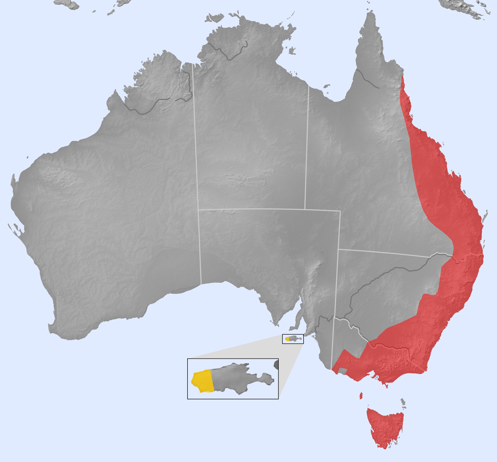

The platypus is native to the freshwaters of eastern Australia, from Queensland to Tasmania.

The platypus is a carnivore and forages by probing along the bottom. It feeds on insect larvae, annelid worms, shrimp, crayfish, bivalves, tadpoles and fish eggs. It stores food in its cheek pouches for later consumption.
The platypus is semiaquatic and requires permanent freshwater habitat. Its swimming style is unique among mammals, propelling itself by alternating strokes of each front foot, while the webbed hind feet and tail are used for steering. It can maintain its relatively low body temperature when feeding in colder depths of below 5 °C. The species is mainly nocturnal but is also active at dusk during the summer and daytime during winter. A platypus may spend half the day in water and then retreat into its burrow, which is constructed by digging into the bank.
?? Replace this with a sentence or two on what you like about this animal.